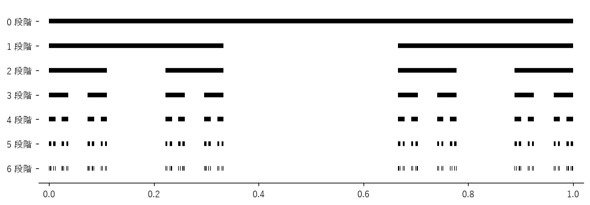
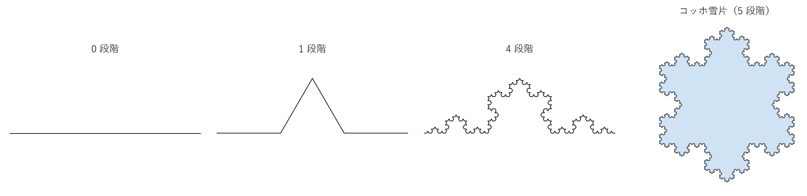
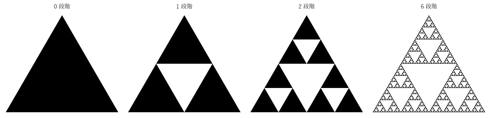
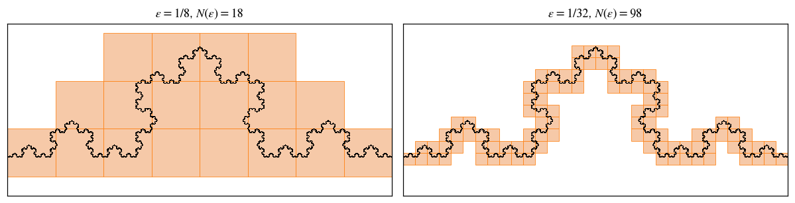
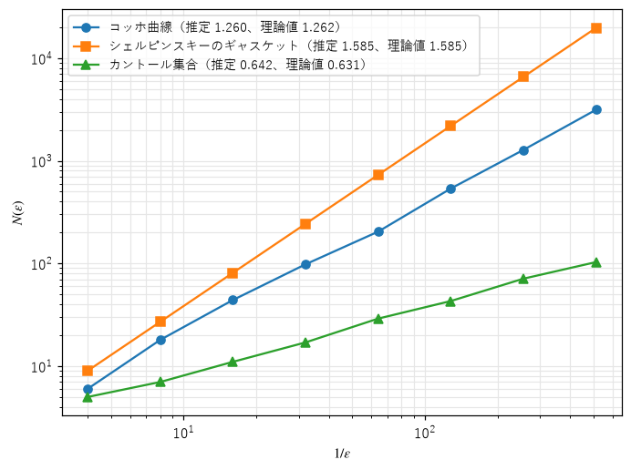

第 7 章 フラクタルと次元
第 II 部では、カオスの分岐図やストレンジアトラクタに、拡大しても細かい構造が現れ続ける性質があることを見た。この章では、そのような図形、すなわちフラクタルを正面から扱う。古典的なフラクタルの作り方を紹介し、「次元」という概念を整数でない値にまで広げて、フラクタルの複雑さを数値で表す方法を学ぶ。
フラクタルとは
フラクタル（fractal）という言葉は、1975 年に数学者のブノワ・マンデルブロが、「破片」を意味するラテン語 fractus から作った。厳密な定義はないが、次のような性質を持つ図形をフラクタルと呼ぶ。
自己相似性：図形の一部を拡大すると、全体と同じ（または似た）形が現れる。
細部の構造：どんなに拡大しても、なめらかな線や面にならず、細かい構造が現れ続ける。
整数でない次元：この章で定義する「次元」が、1 や 2 のような整数にならない。
自然界には、フラクタルに近い形がたくさんある。海岸線、山の稜線、雲、川の流れの網目、樹木の枝分かれ、肺の気管支、血管などである。ユークリッド幾何学の直線、円、球では、これらの形をうまく表せない。マンデルブロは著書『フラクタル幾何学』で、「雲は球ではなく、山は円錐ではなく、海岸線は円ではない」と述べ、自然の形を表すための新しい幾何学としてフラクタルを提唱した。
古典的なフラクタル
フラクタルという言葉が生まれる前から、数学者は奇妙な性質を持つ図形をいくつも考案していた。いずれも、図形の一部を縮小した自分自身の複製で置き換える操作を、無限に繰り返して作る。
カントール集合
区間 \([0, 1]\) から真ん中の 1/3 を取り除き、残った 2 つの区間からそれぞれ真ん中の 1/3 を取り除く。この操作を無限に繰り返して残る点の集合をカントール集合（Cantor set）という（図 32）。


図 32 カントール集合を作る過程
\(n\) 段階目に残る区間の長さの合計は \((2/3)^n\) で、\(n \to \infty\) で 0 になる。つまり、取り除いた区間の長さの合計は 1 であり、カントール集合の「長さ」は 0 である。それにもかかわらず、カントール集合には区間 \([0, 1]\) と同じだけ（数え切れないほど）多くの点が残る。カントール集合は、3 進数で表したときに 1 の桁を使わずに書ける数全体の集合と一致する。
コッホ曲線
線分を 3 等分し、真ん中の部分を、それを 1 辺とする正三角形の残りの 2 辺で置き換える。できた 4 本の線分のそれぞれに同じ操作を繰り返して得られる曲線をコッホ曲線（Koch curve）という。正三角形の 3 辺をコッホ曲線で置き換えた図形をコッホ雪片（Koch snowflake）という（図 33）。


図 33 コッホ曲線を作る過程とコッホ雪片
1 回の操作で、線分の長さは 4/3 倍になる。したがって、\(n\) 段階目の曲線の長さは \((4/3)^n\) で、\(n \to \infty\) で無限大になる。一方、雪片の面積は有限の値に収束する。次の出力は、最初の正三角形の 1 辺を 1 として、周の長さと面積（最初の正三角形との比）を計算したものである。周の長さは際限なく増えるが、面積は 8/5 に収束する。
段階 周の長さ 面積（最初の正三角形との比）
0 3.000 1.000000
1 4.000 1.333333
2 5.333 1.481481
3 7.111 1.547325
5 12.642 1.589595
10 53.273 1.599820
20 946.011 1.600000
面積の極限: 8/5 = 1.6
コッホ曲線は、どこでも折れ曲がっていて、接線を引ける点が 1 つもない。有限の領域に収まる、長さが無限大の曲線である。
シェルピンスキーのギャスケット
正三角形を、各辺の中点を結んで 4 つの小さな正三角形に分け、真ん中の 1 つを取り除く。残った 3 つの正三角形に同じ操作を繰り返して得られる図形をシェルピンスキーのギャスケット（Sierpinski gasket）という（図 34）。1 回の操作で面積は 3/4 倍になるので、極限の面積は 0 である。


図 34 シェルピンスキーのギャスケットを作る過程
これらの図形の作り方は、次の関数のように再帰的に（または、各段階の図形の一覧を更新するループで）書ける。
31def koch_curve(level: int, start: complex = 0.0, end: complex = 1.0) -> Points:
32 """コッホ曲線の level 段階目の折れ線の頂点を、複素数の配列で返す.
33
34 線分を 3 等分し、真ん中の部分を、正三角形の 2 辺で置き換える。
35 """
36 points = np.array([start, end])
37 rotate = np.exp(1j * np.pi / 3.0) # 60 度の回転
38 for _ in range(level):
39 a, b = points[:-1], points[1:]
40 d = (b - a) / 3.0
41 p1 = a + d
42 peak = p1 + d * rotate
43 p2 = a + 2.0 * d
44 new = np.stack([a, p1, peak, p2], axis=1).ravel()
45 points = np.append(new, points[-1])
46 return points
平面上の点を複素数で表すと、回転を掛け算で書けるので、コードが短くなる。\(e^{i\pi/3}\) を掛けると 60 度回転する（付録 A）。
海岸線のパラドックス
イギリスの海岸線の長さは何 km だろうか。1 km の物差しで測った長さと、100 m の物差しで測った長さを比べると、後者のほうが長くなる。短い物差しは、長い物差しでは飛ばしてしまう小さな入り江や岬を測れるからである。物差しを短くするほど、測った長さは増え続け、一定の値に収束しない。
イギリスの科学者ルイス・フライ・リチャードソンは、さまざまな国境や海岸線について、物差しの長さ \(\varepsilon\) と測った長さ \(L(\varepsilon)\) を調べ、両対数グラフでほぼ直線になること、つまり
の関係があることを見つけた。滑らかな曲線なら \(D = 1\) で、\(L\) は一定の値になる。イギリスの西海岸では \(D \approx 1.25\) だった。マンデルブロは 1967 年の論文「イギリスの海岸線の長さはどれだけか」で、この \(D\) を図形の「次元」と解釈した。コッホ曲線も、物差しの長さを 1/3 にするごとに測った長さが 4/3 倍になるので、同じ関係を満たす。
相似次元
整数でない次元を定義するために、まず、ふつうの図形の次元を見直す。
線分を 1/2 に縮小した複製は、2 つで元の線分を覆う。
正方形を 1/2 に縮小した複製は、4 つで元の正方形を覆う。
立方体を 1/2 に縮小した複製は、8 つで元の立方体を覆う。
縮小率を \(s\)、必要な複製の数を \(N\) とすると、\(N = (1/s)^D\) の関係があり、\(D\) がちょうど図形の次元（1、2、3）になっている。そこで、自己相似な図形の相似次元（similarity dimension）を
と定義する。
図形 |
複製の数 \(N\) |
縮小率 \(s\) |
相似次元 \(D\) |
|---|---|---|---|
線分 |
2 |
1/2 |
1 |
正方形 |
4 |
1/2 |
2 |
カントール集合 |
2 |
1/3 |
\(\log 2/\log 3 \approx 0.631\) |
コッホ曲線 |
4 |
1/3 |
\(\log 4/\log 3 \approx 1.262\) |
シェルピンスキーのギャスケット |
3 |
1/2 |
\(\log 3/\log 2 \approx 1.585\) |
カントール集合は点の集まりだが、0 次元の有限個の点よりは「多く」、1 次元の線分よりは「少ない」。コッホ曲線は曲線だが、滑らかな曲線よりは平面を多く埋め、それでも平面を埋め尽くすほどではない。整数でない次元は、このような中間的な性質を数値で表している。
ボックスカウント次元
相似次元は、正確な自己相似性を持つ図形にしか使えない。ストレンジアトラクタや海岸線のような図形の次元を求めるには、ボックスカウント次元（box-counting dimension）を使う。
平面を一辺 \(\varepsilon\) の正方形（ボックス）の格子で区切り、図形と重なるボックスの数 \(N(\varepsilon)\) を数える。滑らかな曲線なら \(N(\varepsilon) \propto 1/\varepsilon\)、面なら \(N(\varepsilon) \propto 1/\varepsilon^2\) となる。一般に \(N(\varepsilon) \propto \varepsilon^{-D}\) となるとき、
をボックスカウント次元という。正確に自己相似な図形では、複製どうしの重なりが無視できれば、ボックスカウント次元は相似次元と一致する。
数値的には、いくつかの \(\varepsilon\) について \(N(\varepsilon)\) を数え、両対数グラフに描いた点に直線を当てはめ、その傾きを \(D\) の推定値とする。図形を点の集まりで近似すれば、ボックスの数は、各点の座標を \(\varepsilon\) で割って切り捨てた整数の組の種類の数として数えられる。
22def box_count(points: Points, eps: float) -> int:
23 """点の集まり points（形は (n, 2)、座標は [0, 1] の範囲）と重なる、一辺 eps のボックスの数を返す."""
24 boxes = np.floor(points / eps).astype(np.int64)
25 # ボックスの番号の組 (i, j) を 1 つの整数にまとめてから、重複を除いて数える
26 keys = boxes[:, 0] * (2 * round(1.0 / eps) + 1) + boxes[:, 1]
27 return len(np.unique(keys))
30def estimate_dimension(points: Points, sizes: NDArray[np.float64]) -> tuple[float, NDArray[np.float64]]:
31 """ボックスの大きさ sizes ごとに数を数え、最小二乗法で直線を当てはめた傾きと、数の配列を返す."""
32 counts = np.array([box_count(points, float(eps)) for eps in sizes], dtype=np.float64)
33 slope, _ = np.polyfit(np.log(1.0 / sizes), np.log(counts), 1)
34 return float(slope), counts
図 35 はコッホ曲線に重なるボックス、図 36 は 3 つの図形の両対数グラフである。


図 35 コッホ曲線と重なるボックス（\(\varepsilon = 1/8\) と \(1/32\)）


図 36 ボックスの大きさと数の関係（両対数グラフ）
推定値と理論値を次に示す。
コッホ曲線: 推定値 1.2600, 理論値 1.2619
シェルピンスキーのギャスケット: 推定値 1.5850, 理論値 1.5850
カントール集合: 推定値 0.6421, 理論値 0.6309
コッホ曲線とギャスケットでは、推定値は理論値とよく一致する。カントール集合ではずれが大きいが、これはボックスの大きさを \(2^{-k}\) としたためである。カントール集合の構造は 1/3 ずつ縮むので、2 のべき乗で区切った格子とは揃わず、ボックスの数が段階的に変わる。ボックスの大きさを構造に合わせて \(3^{-k}\) にとれば、理論上は \(N(\varepsilon) = 2^k\) となり、傾きは理論値に一致する（ただし、この例の点は区間の端点なので、格子の境界にちょうど乗る点が丸め誤差でどちらのボックスに入るかによって、数が少し変わる）。ボックスカウント法では、図形の構造と格子の関係によって推定値がずれることがあるので、\(\varepsilon\) の範囲や刻み方を変えて結果を確かめるとよい。また、点の数が有限なので、\(\varepsilon\) が点の間隔より小さくなると、\(N(\varepsilon)\) は点の数で頭打ちになる。直線を当てはめる範囲は、両対数グラフが直線とみなせる部分に限る必要がある。
数学では、より厳密な次元としてハウスドルフ次元（Hausdorff dimension）が使われる。多くの図形でボックスカウント次元と一致するが、一致しない図形もある。本書では、計算しやすいボックスカウント次元と、第 10 章の相関次元を使う。
統計的自己相似性
コッホ曲線の一部を拡大すると、全体とまったく同じ形が現れる。しかし、海岸線の一部を拡大しても、全体と同じ形が現れるわけではない。現れるのは、全体と「同じくらい入り組んだ」形である。このように、形そのものではなく、統計的な性質（凹凸の大きさの分布など）が拡大縮小しても変わらない性質を統計的自己相似性（statistical self-similarity）という。
また、自然界のフラクタルは、限られた範囲の大きさでしか自己相似でない。海岸線の入り組み方は、数 km から数 m の範囲では似ているかもしれないが、砂粒の大きさまで拡大すれば別の構造になる。それでも、その範囲でフラクタルとして扱うことは、形を理解したり、本物らしい形を生成したりするのに役立つ。第 11 章では、統計的自己相似性を持つ地形を生成する方法を扱う。
まとめ
フラクタルは、自己相似性を持ち、どれだけ拡大しても細部の構造が現れ、整数でない次元を持つ図形である。
カントール集合、コッホ曲線、シェルピンスキーのギャスケットは、縮小した自分自身の複製で置き換える操作を繰り返して作る。
相似次元は \(D = \log N/\log(1/s)\) で定義する。ボックスカウント次元は、ボックスの数と大きさの両対数グラフの傾きとして推定する。
自然界のフラクタルは、統計的に、限られた範囲の大きさで自己相似である。